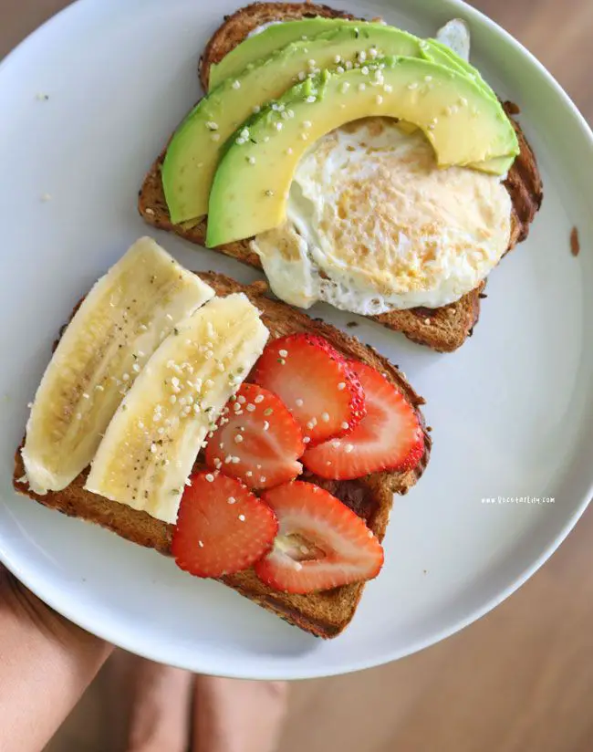

| Imagen |
Descripcion |
Precio |
 |
La historia de los pancakes se remonta a la época medieval, cuando se preparaba una mezcla de harina, huevo y leche para hacer un tipo de pan plano. Con el tiempo, esta receta evolucionó para incluir levadura en polvo y se convirtió en lo se conoce actualmente como hotcake. |
$180.00 |
 |
Este desayuno contiene proteínas de muy buena calidad y de alto valor biológico. También incluye vitaminas de los grupos A y B. Por último, contiene minerales entre los que destaca el hierro, cuyo origen animal permite una fácil absorción. |
$60.00 |
|  |
El pan integral de frutas y frutos secos es una deliciosa opción para los amantes del pan casero. Tiene un sabor, textura y aroma bárbaros, y lo mejor de todo es que es nutritivo y energético. |
$50.00 |
 |
La unión de cereales y frutos secos puede ser espectacular tanto a nivel culinario como nutritivo. Así, pasas de uvas, avellanas, almendras, nueces, castañas y prácticamente cualquier fruto seco integrado en el pan aporta sabor y valor nutricional. |
$70.00 |
 |
El desayuno de pan con huevo y tocino es un clásico que combina sabores reconfortantes y texturas irresistibles |
$140.00 |
|
Este desayuno es una opción saludable y deliciosa para comenzar el día con energía. Combina la frescura de las frutas con la cremosidad del yogur natural |
$100.00 |
 |
Es un plato tradicional que se encuentra en la gastronomía de varios países de América Latina y España. Su base es simple: arroz cocido junto con pollo. Sin embargo, las variaciones en los ingredientes y la preparación hacen que este platillo sea único en cada lugar. |
$250.00 |
 |
Este estofado de pollo con patatas y verduras es una auténtica delicia. El pollo queda súper tierno, al igual que las patatas, y las verduras y la salsa sabrosísimas, con un ligero espesor que le sienta de 10 al plato |
$180.00 |
|
Este plato es una deliciosa combinación de arroz, pollo y una variedad de verduras, cocinadas juntas para crear un sabor reconfortante y lleno de nutrientes. |
$130.00 |
|
El espagueti con albóndigas y salsa de tomate es un platillo delicioso y reconfortante que combina la suavidad de la pasta con la jugosidad de las albóndigas |
$130.00 |
 |
Los chilaquiles son un platillo tradicional mexicano que combina la suavidad de las tortillas con la intensidad de una salsa picante. |
$100.00 |
|
Las enchiladas son un plato de la gastronomía de México elaboradas con tortillas de maíz enrolladas o dobladas y bañadas en alguna salsa picante. Se trata de uno de los platos más populares de México y presenta gran diversidad en las distintas gastronomías regionales del país. |
$90.00 |
|
El caldo de albóndigas es un platillo tradicional mexicano que combina la suavidad de las albóndigas con la riqueza de un caldo aromático |
$80.00 |
|
Las flautas son uno de los platillos más preparados para celebrar distintas fiestas mexicanas, como la Independencia Nacional, la Revolución Mexicana e incluso la conmemoración de la Batalla de Puebla. Lo mejor de este antojito es que resulta muy económico, fácil de preparar y de compartir, por lo que son perfectos para la hora de la fiesta. |
$120.00 |
|
El pollo a la crema con arroz es un platillo que combina la suavidad del pollo en una rica salsa de crema con la textura y sabor del arroz. |
$300.00 |
|
Las enchiladas suizas son un platillo originario de la Ciudad de México y se caracterizan por su salsa cremosa a base de tomate y crema. Estas enchiladas se diferencian de otros tipos por su cubierta de queso derretido, que les otorga un sabor suave y gratinado |
$200.00 |
|
El mole con arroz es una combinación culinaria que fusiona la riqueza del mole con la simplicidad y versatilidad del arroz. Este platillo es un verdadero deleite para los sentidos, y su preparación puede variar según las tradiciones y preferencias personales |
$180.00 |
|
Las tostadas de pollo son un platillo parte de la tradición de la comida callejera mexicana. Estas tostadas son coloridas, versátiles y deliciosas, ya que se pueden preparar con lo que tengamos a la mano |
$140.00 |
 |
Es un producto complejo formado agua, azúcares, ácidos orgánicos, sales minerales, vitaminas y pigmentos, además de una serie de componentes orgánicos volátiles e inestables responsables de su sabor y aroma. |
$60.00 |
|
Este tipo de bebidas pueden proporcionar energía extra a quienes las consumen. |
$30.00 |
|
Bebida azucarada gaseosa vendida a nivel mundial en tiendas, restaurantes y máquinas expendedoras en más de doscientos países o territorios. |
$28.00 |
|
Bebida elaborada a base de leche o helado, que puede llevar frutas, chocolate o turrón, |
$60.00 |
 |
Bebida refrescante aromatizada, formada por una solución electrolítica a base de hidratos de carbono, que contribuye a mantener el nivel de resistencia en ejercicios que requieren una resistencia prolongada. |
$25.00 |
 |
Es un elemento esencial para mantener nuestro cuerpo sano y funcionando correctamente |
$22.00 |
|
Contiene varios cubitos de colores de gelatina preparada, que luego se mezcla con una gelatina dulce y cremosa hecha con leche. Esta gelatina fresca y cremosa se puede hacer con los colores y sabores que se prefiera. |
$60.00 |
 |
Es una combinación única de texturas y sabores. Se compone de dos capas distintas: una capa inferior de pastel de chocolate y una capa superior de flan suave y cremoso. Cuando se hornea, las dos capas se fusionan para crear una textura suave y húmeda con un rico sabor a chocolate y vainilla. |
$170.00 |
|
El pay de queso, también conocido como cheesecake, es un postre que ha deleitado a paladares durante siglos. Su historia es fascinante y se remonta a la antigua Grecia. |
$240.00 |
|
Tipo de masa que suele formarse con agua, manteca (también llamada mantequilla) y harina y que puede rellenarse con alimentos dulces o salados. |
$380.00 |
 |
Pasta compuesta de harina, azúcar y a veces huevo, manteca o confituras diversas, que, dividida en trozos pequeños y moldeados o modelados en forma varia, se cuece al horno |
$120.00 |
|
Se prepara normalmente con huevos enteros, leche y azúcar. El sabor más común es simplemente el de vainilla, pero existen muchas otras variaciones que incluyen almendras, pistacho, limón y otras variedades de frutas. |
$100.00 |